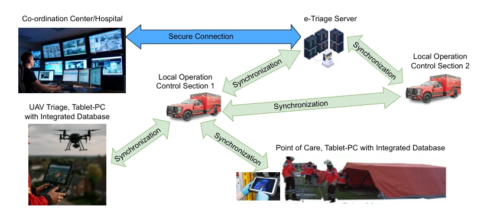
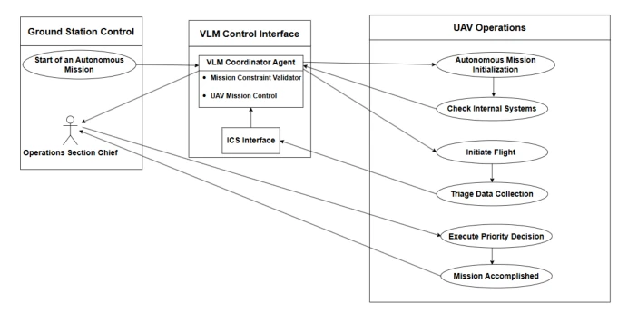
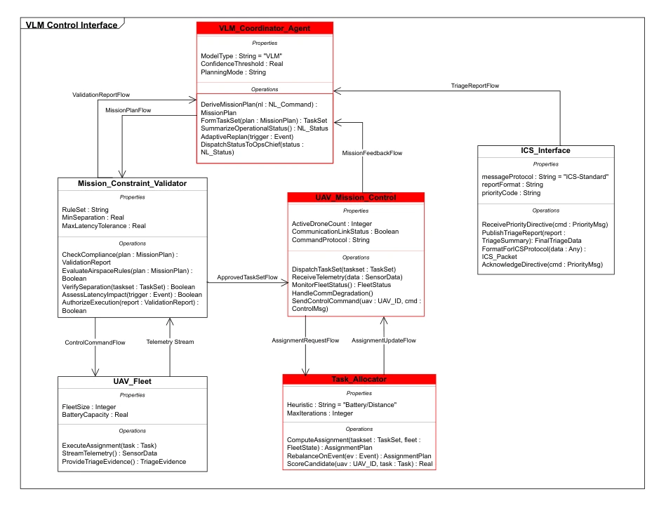
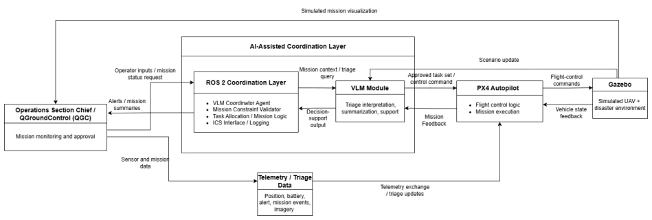
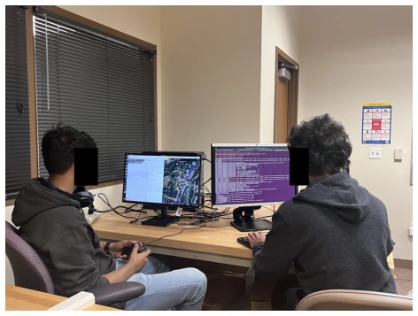
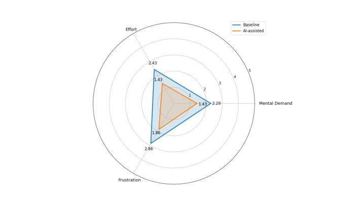
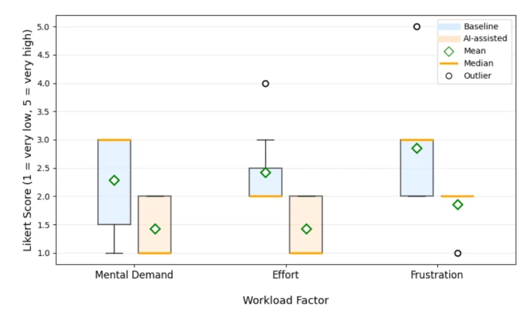
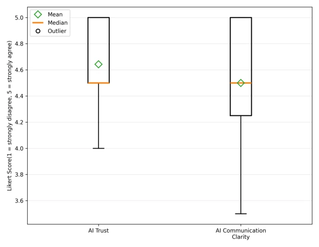

This paper equips drones in disaster rescue with a "human-language interpreter" — VLM. The authors did not develop a new model, but used MBSE to integrate VLM into the command system, positioning it as a coordinator rather than a mere advisor. The benefit is reduced operator fatigue, while the drawback is that only simulations were run, and it is uncertain whether it will hold up in actual flight. It serves as an engineering footnote to the wave of "large models entering robotics". Although the sample size is pitifully small, it at least demonstrates that VLM can reduce operator frustration. However, designing VLM as a "coordination agent" rather than "flight control" is wise, avoiding the risks of direct control, but whether the trust improvement in the simulation environment can transfer to real disaster scenes remains questionable. This engineering approach is more valuable than pure benchmarking, but lacks support from real data.
Existing VLM applications are mostly in social media monitoring or plan generation, where operators still have to translate AI outputs into team actions themselves, instead increasing cognitive burden. Disaster scenes involve large data volumes that exceed human processing capacity, and ICS command systems have a strict hierarchy lacking intelligent coordination. Although LLMs can assist planning [5], they do not solve the problem of how VLM is embedded into the human-machine closed loop. This study aims to verify whether VLM as a coordination agent can reduce workload and improve trust. Especially under multi-UAV collaboration, traditional planning methods are inefficient [6], requiring VLM to enhance semantic understanding. Existing work mostly focuses on single tasks, lacking a system-level framework, leading to fragmented human-machine collaboration.

Fig. 1 Current e-Triage operational control architecture for individual rescue (adapted from [4]). UAVs and field devices synchronize triage data with local control sections and a central server via secure links.
The overall process is based on MBSE modeling. First, SysML is used to draw use case diagrams and block definition diagrams to clarify the responsibilities of modules such as VLM Coordinator Agent and Mission Control. Next, a software-in-the-loop simulation environment is built using ROS 2, Gazebo, and PX4, positioning VLM as a decision support layer rather than direct flight control. VLM is responsible for interpreting natural language instructions to generate task plans, verifying constraints, and assigning tasks. Core modules include VLM Coordinator Agent, UAV Mission Control, and Task Allocator. Finally, human-machine interaction is facilitated through QGroundControl, and telemetry data is collected. The core innovation lies in formalizing VLM logic using MBSE and embedding it into ICS protocols, ensuring communication complies with emergency command standards, achieving a closed loop from conceptual model to executable code. This design ensures system traceability and modularity.

Fig. 2 VLM-assisted UAV coordination showing interaction among control interfaces and operations.

Fig. 3 Block Definition Diagram of the VLM Control Interface showing the main system blocks, their responsibilities, and data flows for mission planning, constraint validation, task allocation, UAV control, ICS communication, and telemetry feedback. The highlighted boxes represent the functions validated in this article in a simulation-in-the-loop framework.

Fig. 4 Complete control architecture for the proposed MBSE framework using ROS 2, PX4, Gazebo, QGround- Control, and a VLM-based coordination layer.
Seven participants were recruited for a comparative experiment, comparing a no-AI-assisted baseline interface with an AI-assisted interface. The NASA-TLX scale was used to assess mental demand, effort, and frustration [16]. Results showed that under AI assistance, all three indicators decreased significantly; mental demand dropped from 2.29 to 1.43, with frustration showing the most obvious reduction. Trust and communication clarity scores were all above 4.5. It was found that VLM can reduce cognitive load, but the sample size is too small, and it is only in a simulation environment, lacking real flight verification. Future work needs to expand to real platforms and more scenarios. The experiments indicate that AI assistance indeed can alleviate stress, but requires more data support.

Fig. 5 Participant interaction with the proposed and developed UAV triage simulation environment with VLM-in-the-loop.

Fig. 6 NASA-TLX-style workload comparison between baseline and AI-assisted UAV triage conditions.

Fig. 7 Distribution of participant workload ratings for mental demand, effort, and frustration in baseline and AI-assisted UAV triage conditions. The box represents the middle 50% of responses, the orange line represents the median, the green diamond represents the mean, the whiskers show the main spread of the data, and the circle markers indicate outliers.

Fig. 8 Participant ratings of AI trust and communication clarity in the AI-assisted UAV triage condition.